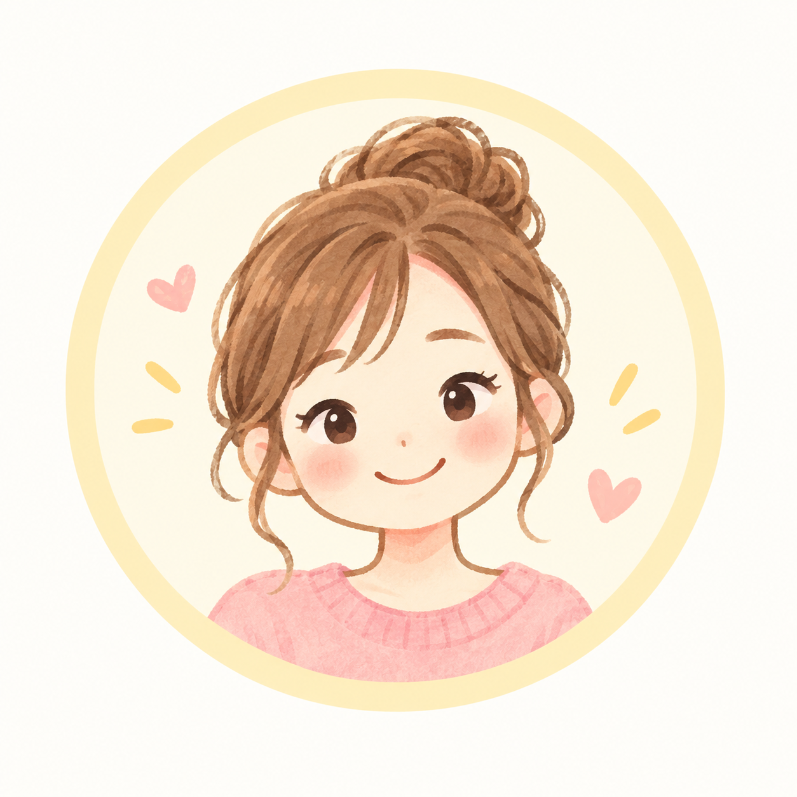

つい自分や誰かを責めちゃってない？ 今のあなたの「心のクセ」を楽しくのぞいてみよう！

質問文がここに表示されます
思考のパターンを集計しています
※今のコンディションによる傾向です
※ご使用前に必ずご確認ください
当アプリ「それって、だれのせい？」は、日常生活で生じやすい思考の傾き（心のクセ）をセルフチェックするためのエンターテインメント・気づき用ツールです。
医学的・心理学的な正式診断ではありません。結果は個人の性格や価値観を断定するものではなく、その時々の状態や考え方の傾向を軽く振り返る目安としてお楽しみください。
💡 プライバシーの安心宣言 ご回答データはすべてお使いの端末（ブラウザ内）でのみ処理され、外部のサーバーへ送信・保存されることは一切ありません。